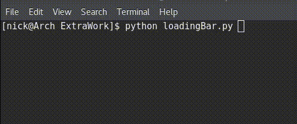
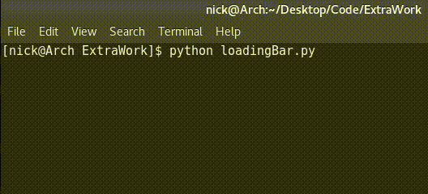

NOTE: This article and its explanations are primarily focused on Python 3.X, however the conversion to Python
2.7 is very simple. Be aware of your integer division, and print functions and it will be a cake
walk. I have attached the Python 2.7 implementation at the bottom of this page for convenience.
If you find a bug, mistake, or edge case, please let me know! I'd like to correct it.
Loading bars (also known as progress bars) are a succinct and efficient means of communicating
to the user how much longer your program will run. They have very specific uses (Halting Problem
anyone?), and they look really cool in the command line.
There's a problem though, they're not the most intuitive thing to make. To a beginner or even an
intermediate programmer, it may be a tricky thing to wrap your head around. Never fear! I will
show you exactly how to pull this off in Python.
You should know in advance that there are plenty of libraries that are more than willing to do
the heavy lifting for you. That being said, creating your own is more fun, and will leave you
feeling more accomplished. This particular implementation works without importing any additional
non-standard libraries, and works on both Linux (Arch and Ubuntu) as well as Windows.
Starting Off
Quickly, lets get an idea of how we would go about this. Lets see what a typical for loop looks
like in Python.
for item in list:
print(item)
For the unfamiliar, we are saying "for each element (item) in this list (list), perform some task"
and that task is printing the value of the item. Simple enough, but how would we turn this into the
same output in the gif at the top of this article?
To some extent, we are accomplishing part of our goal. We are printing something after each operation
in the loop. Only problem is that we will write to a new line each time, and it would not be very
elegant to put the loading bar code in the loop itself.
The answer to our problem lies in the "list" object itself. Under the hood, Python queries that "list"
object looking for something called an
Iterator Object.
Using that Iterator object, the language will repeatedly call the __next__() function until a
StopIteration exception is raised (in Python 2.7 this function is instead called "next()").
The beauty of this is that we can
override the function
and write our own code for it. An example of this can be seen below.
class loadingBar:
def __init__(self, total):
self.index = 0
self.total = total
def __iter__(self):
return self
def __next__(self):
if self.index < self.total:
self.index += 1
else:
raise StopIteration()
Here's where the implementation gets cute, that __next__ function will get called for every iteration in
the loop. This is where we would want to print the loading bar to the screen. Go ahead and modify my code
to do this now. On your own. Go do it, see what happens. Are you done? You back? Great, what happened? Yeah,
it just printed stuff out on different lines. That's not what we want, how do we fix it? Something called
"Carriage Return" (yes it's named after the Carriage Return function of a typewriter). Carriage Return, or
as we will come to know it "\r", will reset the buffer on the console and return to index 0 of the line.
This will allow us to overwrite what we have previously written on the same line. The following code will
show our new __next__ function.
Prototype
def __next__(self):
if self.index < self.total:
self.index += 1
index = self.index
length = 26
negSpace = int(index /(self.total/length))
space = length-negSpace
percent = int(index/self.total*100)
print('\r', end='')
print('<{0}{1}> {2}%'.format('-'*negSpace,
' '*(space),
percent), end='')
sleep(0.1)
return index
else:
raise StopIteration()
Now, lets go over what this code will do. The first part is simple enough, we are just incrememting our
index in the iterator. The variable "length" is the actual length of the bar in the command line. It can
be as long as you want with 1 caveat. This loading bar cannot be more wide than the screen it is on. This
makes sense (where is it going to go?), and if you do make it wider, it will simply over lap into the next
line. Personally, I am fond of widths from between 20 and 50.
That "negSpace" variable is a little bit more complicated. We want to make sure that no matter what, regardless
of how many elements are in the list, we want the bar to stay that same width. This is accomplished with a
small formula I cooked up (using basic Algebra. Really making use of that Comp Sci degree :P ). We first
take the length of the list (self.total) and divide that by our chosen bar width. This will give us a fraction
which we will then use to divide the index (the iteration in the loop). This will give us the correct number
of "-" to fill the space. This will be the progress in the bar. (For the Python 2.7 version be careful with
integer division here. It may be beneficial to print out the result of this equation and debug it yourself.)
After that, we need to determine how much space will be in the bar still, we do this by subtracting the length
with that negSpace variable. Finally we calculate the percentage of completion by index/self.total * 100.
Now this is the part where we use the carriage return. We simply print "\r" and be sure to use the "end=''"
flag as this will ensure that we stay on the same line (in Python 2.7, simply place a comma at the end of the
print statement so that it stays on the same line). In the next print statement we use some string
formatting magic (What is basically printf from C). Here we have some loading bar boundaries (the "<>" part)
followed by the number of progress chunks and spaces. We finish it up by showing the percent until complete.
Be aware that the next part is optional depending on what type of machine you are running the code on.
On some versions of Linux, the "sys.stdout.flush()" is completely optional (like on Arch Linux),
however if you try to go without it on Windows (at least on my machine), it will only print the last
line. Comment it out and see if it still works for you.
The final part to talk about is the sleep function. That is completely optional and is only there to show that
the code is actually working. For a real implementation, you would want to remove it, and rely on how long it
takes to perform the operation in the original for loop.
Putting Everything Together
Lets finish this out with how we will call this function. The nice part about this implementation is that we
don't have to alter our loop at all. We just need to create the loading bar object first, and pass in the length
of the list. After that, you can use that object in your for loop like you normally would. Below is the complete
code for the entire application.
Final Code (Python 3.X)
import sys
from time import sleep
class loadingBar:
def __init__(self, total):
self.index = 0
self.total = total
def __iter__(self):
return self
def __next__(self):
if self.index < self.total:
self.index += 1
index = self.index
length = 26
negSpace = int(index /(self.total/length))
space = length-negSpace
percent = int(index/self.total*100)
print('\r', end='')
print('<{0}{1}> {2}%'.format('-'*negSpace,
' '*(space),
percent), end='')
sys.stdout.flush()
sleep(0.1)
return index
else:
raise StopIteration()
a = [x for x in range(50)]
loadList = loadingBar(len(a))
for item in loadList:
#Do some work here, remove 'None' when done
None
print()
Final Code (Python 2.7)
import sys
from time import sleep
class loadingBar:
def __init__(self, total):
self.index = 0
self.total = total
def __iter__(self):
return self
def next(self):
if self.index < self.total:
self.index += 1
index = self.index
length = 25
negSpace = int(index /(float(self.total)/length))
space = length-negSpace
percent = int((index/float(self.total))*100)
print '\r',
print '<{0}{1}> {2}%'.format('-'*negSpace, ' '*(space), percent) ,
sys.stdout.flush()
sleep(0.1)
return index
else:
raise StopIteration()
a = [x for x in range(100)]
loadList = loadingBar(len(a))
for item in loadList:
#Do some work here, remove 'None' when done
None
print ''
And thats all. This code should accept a list of any size and display a pretty loading bar for you. Be aware
it is not possible to print in the for loop while you have this active (How could you write on the
same line, while moving the stdout buffer?).
I encourage you to customize this as much as you like by changing the width of the bar and changing the symbols
of the bar itself, such as changing the '<' to '['. Below is my favorite version using the unicode character '\u2588'.
